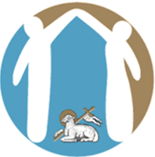
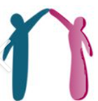

Search Results

Preston City of Sanctuary
Preston Sanctuary

City of Sanctuary UK
Sanctuary UK
Preston Sanctuary
Home
About Us
About Us
What We Do
Who We Are
Experts Group
Policies & Documents
Local Support
Red Cross
Kind Communities
Muslim Forum
Sports & Leisure
Help In Preston
Learning English
Learning English (ESOL)
Translation & interpreting
Schools
Libraries
Universities
Public Services
Housing
Health
Work
Immigration Rights
Transport
Get Involved
For Volunteers
Campaigns
Donate
Events
Contact
Contact Overview
Get In Touch (Form)